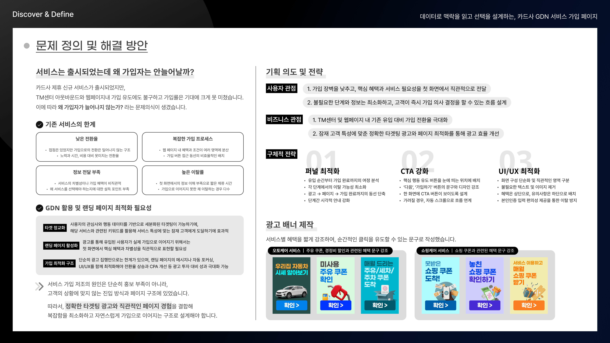
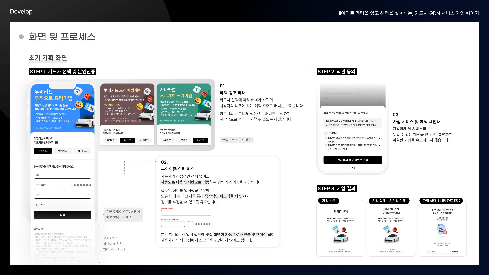
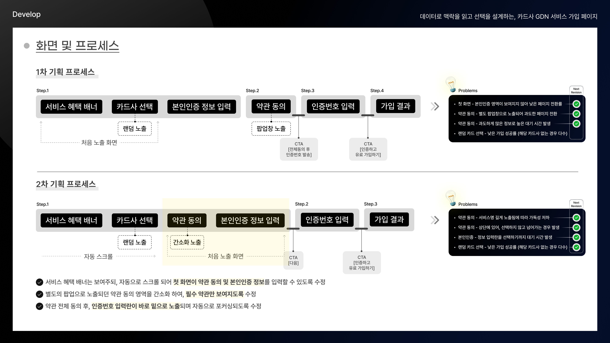
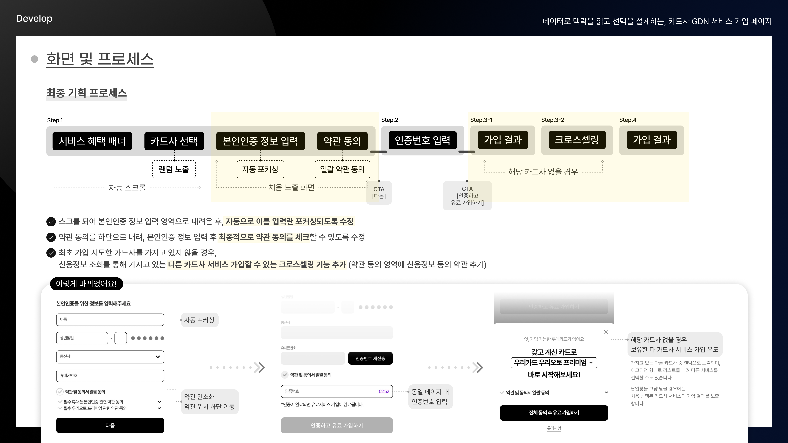

📊

카드사 GDN 서비스 가입 페이지
데이터로 맥락을 읽고 선택을 설계하는 가입 UX · 티오에스코리아
카드사 제휴 신규 서비스가 출시되었지만 가입률이 기대 이하였습니다.
왜 가입자가 늘어나지 않는가?라는 물음에서 시작해 데이터 기반으로 UX 전체를 재설계했습니다.
왜 가입자가 늘어나지 않는가?라는 물음에서 시작해 데이터 기반으로 UX 전체를 재설계했습니다.
UX Process
🔍 Problem→📊 Research→🎯 Define→✏️ Design→🧪 Test→📈 Result
Problem
TM 및 웹 유도 가입에도 가입 전환율 저조
낮은 전환율 / 복잡한 가입 프로세스 / 정보 전달 부족 / 높은 이탈률 4가지 문제 확인
낮은 전환율 / 복잡한 가입 프로세스 / 정보 전달 부족 / 높은 이탈률 4가지 문제 확인
Research
사용자 이탈 지점 데이터 분석 → 퍼널 단계별 이탈 원인 파악
사용자 유형 분석 및 행동 패턴 기반 타겟 세그먼트 도출
사용자 유형 분석 및 행동 패턴 기반 타겟 세그먼트 도출
Define
① 퍼널 최적화 ② CTA 강화 ③ UI/UX 최적화 3가지 전략 수립
사용자 관점 + 비즈니스 관점 동시 설계
사용자 관점 + 비즈니스 관점 동시 설계
Design
1차 → 2차 → 최종 3회 반복 개선 (약관 간소화·위치 이동·자동 포커싱·크로스셀링 기능 추가)
스토리보드 작성 및 개발팀 협업
스토리보드 작성 및 개발팀 협업
Test
QA 진행 → 알파 테스트 → 서비스 출시 운영
실시간 오류 검증 문구 안내 및 자동 포커싱을 통한 입력 편의성 검증, 반영
실시간 오류 검증 문구 안내 및 자동 포커싱을 통한 입력 편의성 검증, 반영
Result
UX/UI 개선 이후 본인인증 횟수 5배 이상, 가입 전환율 400% 이상 상승
GDN 광고 단가 50% 절감 + 크로스셀링 효과 동시 달성
GDN 광고 단가 50% 절감 + 크로스셀링 효과 동시 달성
5배↑
본인인증 성공 횟수
+438%
일일 가입자 수 최대
↓30%
광고 가입 단가 감소
~30%
크로스셀링 전환율
Main Experience
User Research
사용자 이탈 지점 데이터 정량 분석으로 퍼널 단계별 문제 원인 도출. 광고 가입 단가 및 본인인증 횟수 등 수치 기반 의사결정
User Stories · Use Case
카드사 가입 유저의 상황과 니즈를 기반으로 Use Case별 가입 시나리오 설계 → 기가입 및 카드 없음 등 엣지 케이스까지 보완
UX Concept · Direction
가입 장벽 최소화 + 전환율 극대화를 UX Direction으로 설정하고 퍼널 최적화/CTA 강화/UI 최적화 3가지 전략 축으로 컨셉 구체화
UI 설계 · Workflows
1차→2차→최종 가입 프로세스 플로우 반복 설계, 약관 위치 이동 및 자동 포커싱과 크로스셀링 팝업 등 화면 정책 수립
Keyscreen Design
카드사별 시그니처 컬러 배너, CTA 버튼, 약관 UI 등 주요 화면 스토리보드 작성 후 키스크린 설계 및 디자인/퍼블리싱 검토 후 개발 전달
개발 F/U · QA
QA → 알파 테스트 → 출시 후 모니터링과 유지보수까지 전 과정 직접 수행, 실시간 오류 검증 문구 안내와 자동 포커싱 입력 편의성 등 사용성 이슈 반영
🏆 UX/UI 개선 이후 본인인증 횟수 5배 이상, 가입 전환율 400% 이상 상승 · GDN 광고 단가 50% 절감 + 크로스셀링 효과 동시 달성
Result



